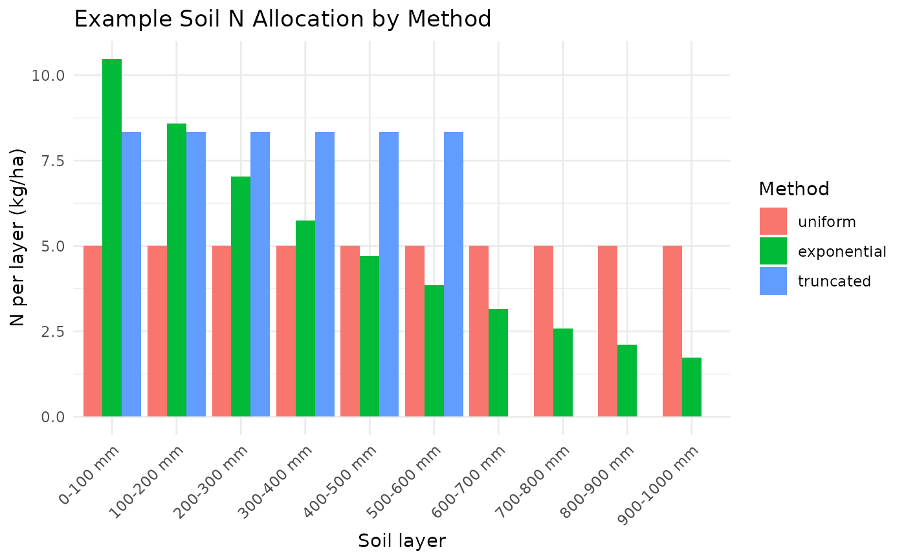

R/distribute_soil_n.R
distribute_soil_n.RdAllocates a total profile mineral nitrogen amount (\(kg/ha\)) into soil layers using a generic depth-weighted kernel. This function is deterministic, returns non-negative layer values, and conserves the supplied total nitrogen.
distribute_soil_n(
total_n,
thickness_mm,
method = c("exponential", "uniform", "truncated"),
lambda_mm = 500,
max_depth_mm = NULL
)Numeric scalar. Total profile mineral nitrogen to distribute (\(kg/ha\)). Must be finite and non-negative.
Numeric vector. Layer thicknesses in mm. All values must be finite and strictly positive.
Character scalar. Distribution kernel to use:
"exponential" (default), "uniform", or "truncated".
Numeric scalar. Exponential decay length scale in mm,
used only when method = "exponential". Smaller values produce
steeper surface concentration; larger values approach uniform
distributions.
Numeric scalar. Cutoff depth in mm for
method = "truncated"; nitrogen is distributed uniformly from
0 to this depth and zero below.
Numeric vector of layer nitrogen values (\(kg/ha\)),
with length equal to length(thickness_mm).
The exponential method is intended as a pragmatic default for pre-sowing initialisation when measured soil nitrate profiles are unavailable, representing situations where mineralised nitrogen from decomposing residues and roots is concentrated near the soil surface and declines with depth. Alternative kernels are provided to support simpler assumptions or truncated rooting zones.
This function does not attempt to reproduce measured soil nitrate profiles or rainfall-driven redistribution. Where detailed soil nitrogen measurements or continuous system spin-up simulations are available, those approaches should be preferred.
library(agrillm)
thickness <- rep(100, 10)
distribute_soil_n(50, thickness)
#> [1] 10.482054 8.581980 7.026331 5.752673 4.709891 3.856132 3.157134
#> [8] 2.584843 2.116290 1.732672
distribute_soil_n(50, thickness, method = "uniform")
#> [1] 5 5 5 5 5 5 5 5 5 5
distribute_soil_n(50, thickness, method = "truncated", max_depth_mm = 600)
#> [1] 8.333333 8.333333 8.333333 8.333333 8.333333 8.333333 0.000000 0.000000
#> [9] 0.000000 0.000000
# Compare distribution methods in a single figure.
if (requireNamespace("ggplot2", quietly = TRUE)) {
layer_bounds <- cumsum(thickness)
layer_labels <- paste0(c(0, head(layer_bounds, -1)), "-", layer_bounds, " mm")
profiles <- rbind(
data.frame(layer = layer_labels,
n_kg_ha = distribute_soil_n(50, thickness, method = "uniform"),
method = "uniform"),
data.frame(layer = layer_labels,
n_kg_ha = distribute_soil_n(50, thickness, method = "exponential", lambda_mm = 500),
method = "exponential"),
data.frame(layer = layer_labels,
n_kg_ha = distribute_soil_n(50, thickness, method = "truncated", max_depth_mm = 600),
method = "truncated")
) |>
dplyr::mutate(layer = factor(layer, levels = layer_labels))
profiles$method <- factor(profiles$method, levels = c("uniform", "exponential", "truncated"))
ggplot2::ggplot(profiles, ggplot2::aes(x = layer, y = n_kg_ha, fill = method)) +
ggplot2::geom_col(position = "dodge") +
ggplot2::labs(
title = "Example Soil N Allocation by Method",
x = "Soil layer",
y = "N per layer (kg/ha)",
fill = "Method"
) +
ggplot2::theme_minimal(base_size = 11) +
ggplot2::theme(axis.text.x = ggplot2::element_text(angle = 45, hjust = 1))
}
